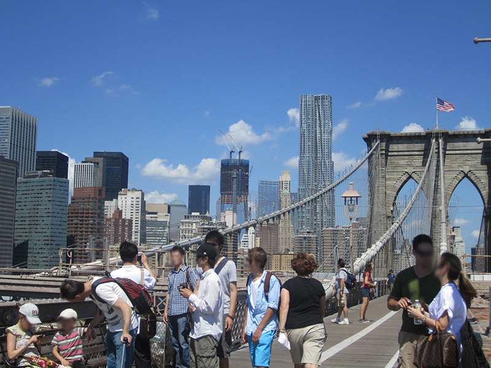

Welcome to Brooklyn
Brooklyn is the most populous of New York City's five boroughs, with about 2.5 million people, and the second-largest in area. Since 1896, Brooklyn has had the same boundaries as Kings County, which is the most populous county in New York and the second-most densely populated county in the United States, after New York County (Manhattan). It is also the westernmost county of the City of New York on Long Island. Today, if it were an independent city, Brooklyn would rank as the fourth most populous city in the U.S., behind only the other boroughs of New York combined, Los Angeles, and Chicago.
Brooklyn was an independent city until January 1, 1898 when, according to the Charter of "Greater New York", Brooklyn was consolidated with the other boroughs to form the modern "City of New York". It continues to maintain a distinct culture. Many Brooklyn neighborhoods are ethnic enclaves where particular ethnic groups and cultures predominate. Brooklyn's official motto is Eendraght Maeckt Maght. Written in the (early modern spelling of the) Dutch language, it is inspired by the motto of the United Dutch Provinces (currently the official motto of Belgium) and translated "In unity, there is strength." The motto is displayed on the borough seal and flag, which also feature a young robed woman bearing fasces, a traditional emblem of Republicanism. Brooklyn's official colors are blue and gold.
The Dutch were the first Europeans to settle in the area on the western end of Long Island, also inhabited by a Native American people, the Lenape (often referred to in contemporary colonial documents by the Lenape place-name for one of the larger native settlements:"Canarsee"). The first Dutch settlements, established in 1634, were called Midwout (Midwood) and Vlacke Bos (Flatbush). The Dutch also purchased land during the 1630s from the Lenape in present-day Gowanus, Red Hook, the Brooklyn Navy Yard, and Bushwick.
The Village of Breuckelen, named for Breukelen in the province of Utrecht in the Netherlands, was authorized by the Dutch West India Company in 1646; it became the first municipality in what is now New York State. At the time, Breuckelen was part of New Netherland. Other villages were later incorporated into Brooklyn: Boswijk (Bushwick), Nieuw Utrecht (New Utrecht), and Nieuw Amersfoort (Flatlands). A few houses and cemeteries still show the Dutch origins of the borough of Brooklyn, including the oldest house of New York City, the Pieter Claesen Wyckoff House in Flatlands.